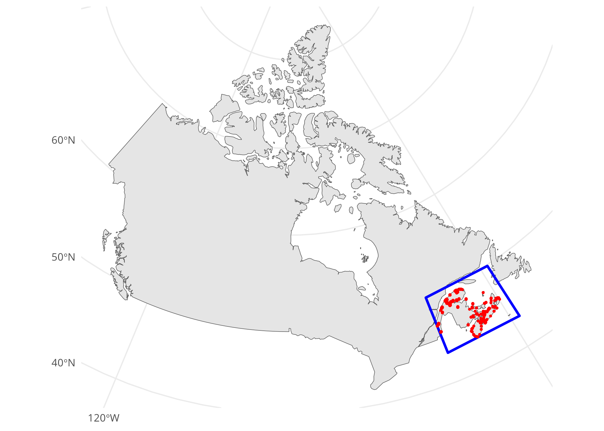
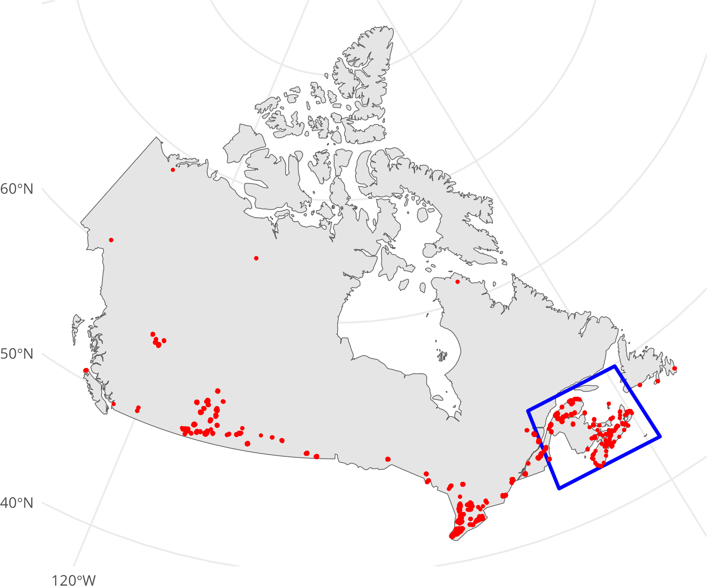
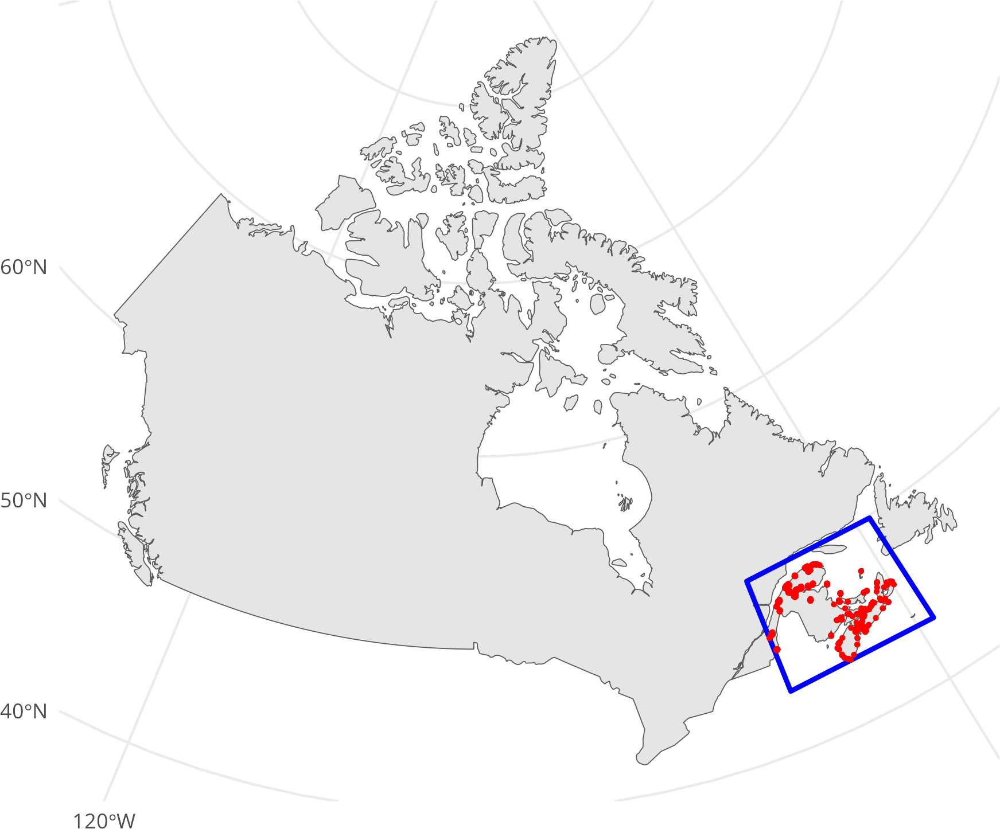
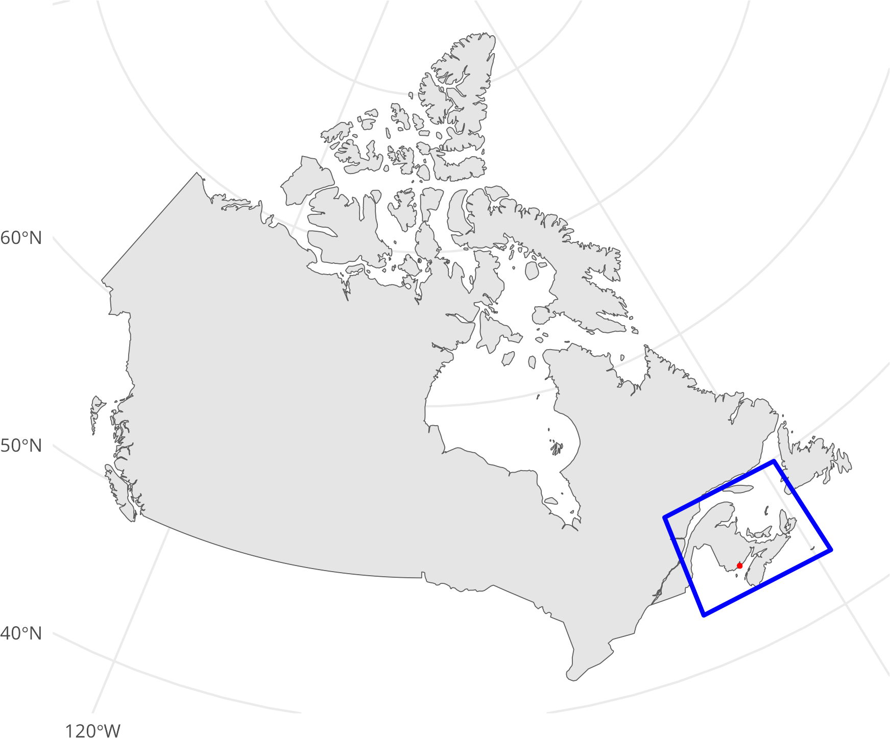

library(sf)
library(DBI)
library(duckdb)
library(ggplot2)
library(rnaturalearth)
library(rnaturalearthdata)6 Filtering spatial data
In this tutorial, we will explore different methods to filter spatial data using the sf package in R. We will use the Canadian Wind Turbine Database as our example dataset.
6.1 Filtering spatial data with sf
The Canadian Wind Turbine Database contains the geographic location and key technology details for wind turbines installed in Canada.
# URL to the wind turbine database
url <- "/vsizip//vsicurl/https://ftp.cartes.canada.ca/pub/nrcan_rncan/Wind-energy_Energie-eolienne/wind_turbines_database/wind_turbine_database_en.gdb.zip"
# List layers in the dataset
st_layers(url)| name | geomtype | driver | features | fields | crs |
|---|---|---|---|---|---|
| wind_turbine | Point | OpenFileGDB | 7578 | 17 | NAD83 / Canada Atlas Lambert , PROJCRS[“NAD83 / Canada Atlas Lambert”, |
BASEGEOGCRS["NAD83",
DATUM["North American Datum 1983",
ELLIPSOID["GRS 1980",6378137,298.257222101,
LENGTHUNIT["metre",1]]],
PRIMEM["Greenwich",0,
ANGLEUNIT["degree",0.0174532925199433]],
ID["EPSG",4269]],
CONVERSION["Canada Atlas Lambert",
METHOD["Lambert Conic Conformal (2SP)",
ID["EPSG",9802]],
PARAMETER["Latitude of false origin",49,
ANGLEUNIT["degree",0.0174532925199433],
ID["EPSG",8821]],
PARAMETER["Longitude of false origin",-95,
ANGLEUNIT["degree",0.0174532925199433],
ID["EPSG",8822]],
PARAMETER["Latitude of 1st standard parallel",49,
ANGLEUNIT["degree",0.0174532925199433],
ID["EPSG",8823]],
PARAMETER["Latitude of 2nd standard parallel",77,
ANGLEUNIT["degree",0.0174532925199433],
ID["EPSG",8824]],
PARAMETER["Easting at false origin",0,
LENGTHUNIT["metre",1],
ID["EPSG",8826]],
PARAMETER["Northing at false origin",0,
LENGTHUNIT["metre",1],
ID["EPSG",8827]]],
CS[Cartesian,2],
AXIS["(E)",east,
ORDER[1],
LENGTHUNIT["metre",1]],
AXIS["(N)",north,
ORDER[2],
LENGTHUNIT["metre",1]],
USAGE[
SCOPE["Transformation of coordinates at 5m level of accuracy."],
AREA["Canada - onshore and offshore - Alberta; British Columbia; Manitoba; New Brunswick; Newfoundland and Labrador; Northwest Territories; Nova Scotia; Nunavut; Ontario; Prince Edward Island; Quebec; Saskatchewan; Yukon."],
BBOX[38.21,-141.01,86.46,-40.73]],
ID["EPSG",3978]] |# Read the entire dataset
pts <- read_sf(url)
# Load and transform Canada map
canada <- ne_countries(
scale = "medium",
returnclass = "sf",
country = "Canada"
) |>
st_transform(crs = "EPSG:3978")
# Plot the map with wind turbine points
ggplot() +
geom_sf(data = canada) +
geom_sf(data = pts, color = "red", size = 0.5)
6.2 Filtering spatial data with a bounding box
To avoid loading the entire dataset into memory, we can filter the data using a bounding box. This is particularly useful when working with large datasets. We can leverage the wkt_filter argument to filter spatial data and reduce the amount of data loaded into memory.
# Read and transform the area of interest
area <- read_sf(here::here("data", "area.geojson")) |>
st_transform(crs = st_crs(pts))
# Plot the map with the area of interest
ggplot() +
geom_sf(data = canada) +
geom_sf(data = area, color = "blue", fill = NA, linewidth = 1L) +
geom_sf(data = pts, color = "red", size = 0.5)
Instead of loading the entire dataset into memory, we can filter the data using a bounding box.
# Convert the area geometry to WKT
wkt <- area |>
st_geometry() |>
st_as_text()
# Read the filtered dataset using the bounding box
filtered <- read_sf(url, wkt_filter = wkt)
filtered[["Notes"]] <- NULL
# Plot the filtered data
ggplot() +
geom_sf(data = canada) +
geom_sf(data = area, color = "blue", fill = NA, linewidth = 1L) +
geom_sf(data = filtered, color = "red", size = 0.5)
# Display the number of rows and the first few rows of the filtered data
nrow(filtered)[1] 2032head(filtered)| Province_Territory | Project_Name | Total_Project_Capacity_MW | Turbine_Identifier | Turbine_Number | Turbine_Number_in_Project | Turbine_Rated_Capacity_kW | Rotor_Diameter_m | Hub_Height_m | Manufacturer | Model | Commissioning | Latitude | Longitude | Data_Sources | Basemap | Shape |
|---|---|---|---|---|---|---|---|---|---|---|---|---|---|---|---|---|
| New Brunswick | Burchill | 42 | BRH1 | 1 | 1/10 | 4200 | 141 | 135 | Enercon | E141-4.2 | 2023 | 45.15949 | -66.19081 | [70], [71], [910] | ESRI | POINT (2225020 82296.21) |
| New Brunswick | Burchill | 42 | BRH2 | 2 | 2/10 | 4200 | 141 | 135 | Enercon | E141-4.2 | 2023 | 45.16434 | -66.19718 | [70], [71], [910] | ESRI | POINT (2224322 82566.09) |
| New Brunswick | Burchill | 42 | BRH3 | 3 | 3/10 | 4200 | 141 | 135 | Enercon | E141-4.2 | 2023 | 45.16875 | -66.20070 | [70], [71], [910] | ESRI | POINT (2223851 82890.97) |
| New Brunswick | Burchill | 42 | BRH4 | 4 | 4/10 | 4200 | 141 | 135 | Enercon | E141-4.2 | 2023 | 45.17307 | -66.20036 | [70], [71], [910] | ESRI | POINT (2223662 83342.02) |
| New Brunswick | Burchill | 42 | BRH5 | 5 | 5/10 | 4200 | 141 | 135 | Enercon | E141-4.2 | 2023 | 45.17834 | -66.19340 | [70], [71], [910] | ESRI | POINT (2223902 84120.34) |
| New Brunswick | Burchill | 42 | BRH6 | 6 | 6/10 | 4200 | 141 | 135 | Enercon | E141-4.2 | 2023 | 45.18281 | -66.18900 | [70], [71], [910] | ESRI | POINT (2223997 84728.45) |
6.3 Refining the filter with a user-defined SQL query
We can further refine our filter by using a user-defined query. For example, we can filter the wind turbines based on their rated capacity.
# Display the range of turbine capacities
range(filtered[["Turbine_Rated_Capacity__kW_"]])[1] 0 4200To refine the filter, we can use a custom query to select only the wind turbines with a rated capacity greater than 4000 kW. First, we need to identify the layer name to use in the SQL query.
# List layers in the dataset
st_layers(url)| name | geomtype | driver | features | fields | crs |
|---|---|---|---|---|---|
| wind_turbine | Point | OpenFileGDB | 7578 | 17 | NAD83 / Canada Atlas Lambert , PROJCRS[“NAD83 / Canada Atlas Lambert”, |
BASEGEOGCRS["NAD83",
DATUM["North American Datum 1983",
ELLIPSOID["GRS 1980",6378137,298.257222101,
LENGTHUNIT["metre",1]]],
PRIMEM["Greenwich",0,
ANGLEUNIT["degree",0.0174532925199433]],
ID["EPSG",4269]],
CONVERSION["Canada Atlas Lambert",
METHOD["Lambert Conic Conformal (2SP)",
ID["EPSG",9802]],
PARAMETER["Latitude of false origin",49,
ANGLEUNIT["degree",0.0174532925199433],
ID["EPSG",8821]],
PARAMETER["Longitude of false origin",-95,
ANGLEUNIT["degree",0.0174532925199433],
ID["EPSG",8822]],
PARAMETER["Latitude of 1st standard parallel",49,
ANGLEUNIT["degree",0.0174532925199433],
ID["EPSG",8823]],
PARAMETER["Latitude of 2nd standard parallel",77,
ANGLEUNIT["degree",0.0174532925199433],
ID["EPSG",8824]],
PARAMETER["Easting at false origin",0,
LENGTHUNIT["metre",1],
ID["EPSG",8826]],
PARAMETER["Northing at false origin",0,
LENGTHUNIT["metre",1],
ID["EPSG",8827]]],
CS[Cartesian,2],
AXIS["(E)",east,
ORDER[1],
LENGTHUNIT["metre",1]],
AXIS["(N)",north,
ORDER[2],
LENGTHUNIT["metre",1]],
USAGE[
SCOPE["Transformation of coordinates at 5m level of accuracy."],
AREA["Canada - onshore and offshore - Alberta; British Columbia; Manitoba; New Brunswick; Newfoundland and Labrador; Northwest Territories; Nova Scotia; Nunavut; Ontario; Prince Edward Island; Quebec; Saskatchewan; Yukon."],
BBOX[38.21,-141.01,86.46,-40.73]],
ID["EPSG",3978]] |We can use wind_turbine as the layer name in the custom query.
# Read the filtered dataset with a custom query
high_capacity <- read_sf(
url,
wkt_filter = wkt,
query = "SELECT * FROM wind_turbine WHERE Turbine_Rated_Capacity__kW_ > 4000"
)
high_capacity[["Notes"]] <- NULL
# Display the number of rows and the first few rows of the high capacity data
nrow(high_capacity)[1] 10# Plot the high capacity turbines
ggplot() +
geom_sf(data = canada) +
geom_sf(data = area, color = "blue", fill = NA, linewidth = 1L) +
geom_sf(data = high_capacity, color = "red", size = 0.5)
6.4 Filtering spatial data with DuckDB
In this section, we will demonstrate how to filter spatial data using DuckDB. DuckDB is an embedded analytical database that supports spatial extensions.
# Connect to DuckDB
conn <- dbConnect(duckdb())
# Install and load the spatial extension
dbSendQuery(conn, "INSTALL spatial;")
dbSendQuery(conn, "LOAD spatial;")
# Create a table with spatial data filtered by a bounding box
dbSendQuery(
conn,
"
CREATE
OR REPLACE TABLE t AS
SELECT
*,
ST_asWKB(geom) AS geometry
FROM
ST_Read('/vsis3/spatial-playground/gmw_v3.fgb', spatial_filter_box = {'min_x' : - 30, 'min_y' : 0, 'max_x' : - 50, 'max_y' : 45});
"
)
# Read the filtered data from DuckDB
read_sf(conn, query = "SELECT * FROM t", geometry_column = "geometry")
# Read the filtered data with an additional computed area column
read_sf(
conn,
query = "SELECT *, ST_Area(geom) as area1 FROM t",
geometry_column = "geometry"
) |>
mutate(area2 = st_area(geometry), .after = area1)